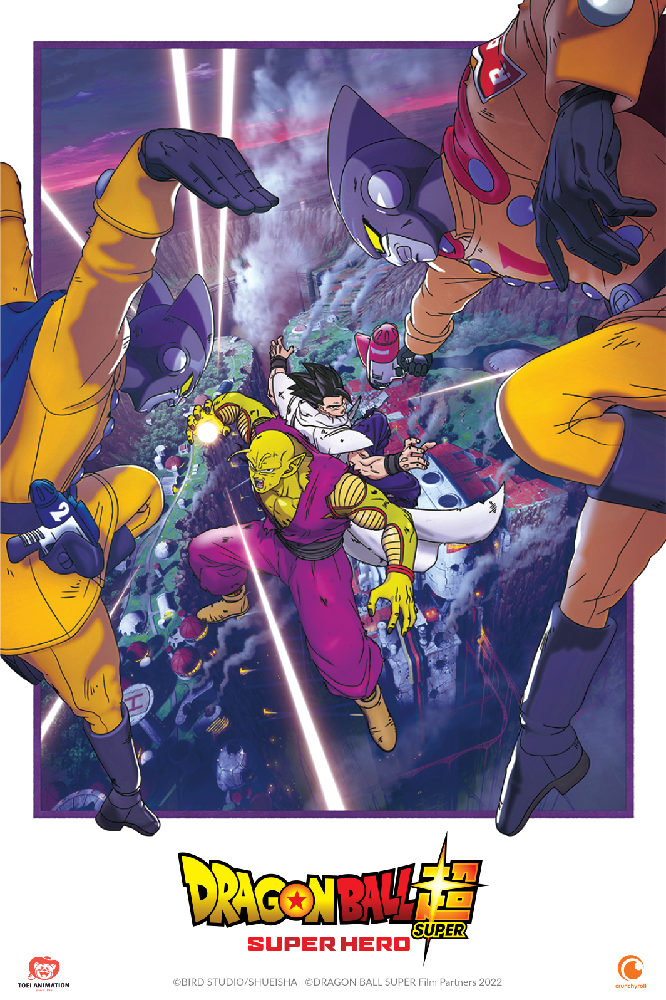

¡La película está hablada y subtitulada en castellano, español latino!
El día llegó: ¡Dragon Ball Super: SUPER HERO ya se estrenó en Crunchyroll! Fue una ardua espera... ¡pero valió la pena, y pueden disfrutarla en sus televisores, consolas y dispositivos AHORA MISMO! Pero eso no es todo: ¡la reciente película de Akira Toriyama está hablada y subtitulada en una extensa variedad de idiomas, incluyendo castellano y español latino.
Sinopsis oficial de Dragon Ball Super: SUPER HERO:
El Ejército de la Cinta Roja fue destruido por Son Goku. Los individuos que mantienen su espíritu han
creado los Androides definitivos, Gamma 1 y Gamma 2. Estos dos Androides se llaman a sí mismos
"Superhéroes". Estos dos Androides se autodenominan "Superhéroes". Comienzan a atacar a Piccolo y
Gohan... ¿Cuál es el objetivo del Nuevo Ejército de la Cinta Roja? Ante el peligro que se avecina, ¡es
hora de despertar, Superhéroe!
Fuente: Crunchyroll